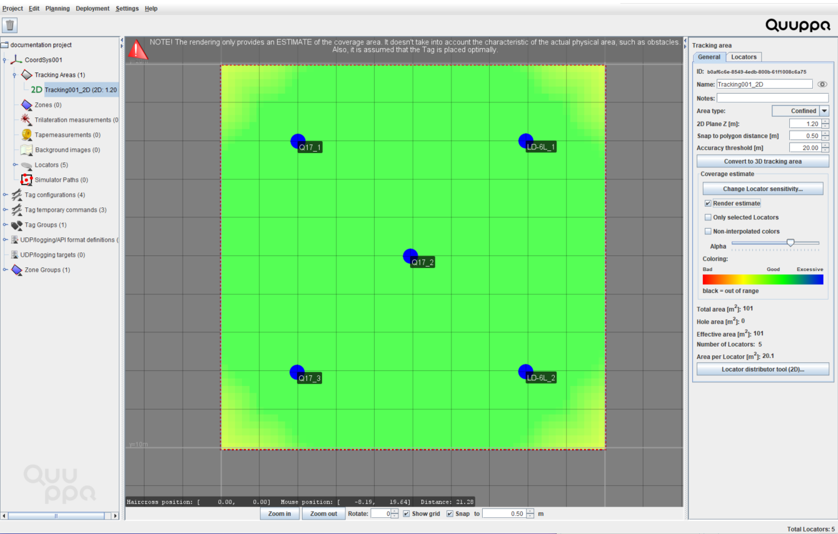

Project Planning
Once you have your Development Kit system set up, you can start planning your project using the Quuppa Site Planner (QSP). This step will help you assess how to deploy the project in your space and prepare you for the physical installation.
-
Start the QSP application by double-clicking the Quuppa Site
Planner icon on the Quuppa Controller's desktop.

-
In the QSP, create a new project using the New project
wizard. Enter the following information for the new
project:
Important: Always use a dot as a decimal separator. Also, since we’re using CSV format (Comma Separated Values) when exporting data from the Quuppa system, don’t use commas in the names of any of the objects in the Quuppa projects.

- Give a descriptive name for the project.
- Select Proprietary mode as the operation mode.
- Select an appropriate default Locator type: Q17 or Q35.
- Select an appropriate tracking area type for your deployment environment: Open, Semiconfined or Confined.
- Choose whether or not you are using a background
image.
- By selecting the Create project and import background image button, you will be asked to choose which file to import into the project, after which the project file will be created.
- By selecting the Create project without background image button, a new project file will be created without a background image.
Note: These are the default settings for your project. They can be edited later if needed so you don't need to worry too much about them at this stage. -
If you are using a background image, scale the image:
Note: If you closed the New Project Wizard already but still want to add a background image, you can do so by selecting Planning > Add Background image from the menu at the top.
- Measure the dimensions of the real space (e.g. distance between walls) and identify reference points on the map to use for scaling. Try to measure as accurately as possible (down to the cm) as this will improve tracking results later.
- Pick the starting point for the scaling measurement in the QSP (e.g. a wall) by clicking on the map and then select the ending point (e.g. another wall) by clicking it.
- Input the real distance in meters into the wizard.Note: If you missed the Scaling Wizard for some reason, or want to re-scale your background image later, select the image and click the Scale background image button in the right-hand panel to start the Scaling Wizard.
If you are not using a background image, you should measure the real dimensions of the space that you are using so that you can modify the tracking area polygon appropriately in the next step.
-
Modify the tracking area polygon to match the desired area in the
background image:
- Select Tracking Areas from the object tree on the left and click Edit polygon button in the panel on the right.
- Edit the polygon:
- To move a polygon point, click and hold the left mouse button on top of a point and drag to move.
- To add a polygon point, click the left mouse button at the edge of the polygon.
- To remove a polygon point, either click the right mouse button on top of a point or select the point and press delete.
-
Add Locators to your project:
- In the menu bar at the top, choose Planning > Add Locator. A blue Locator circle will appear in the map view. Repeat the process to add as many Locators as you will be using in your project.
- Move the Locators to the planned locations by dragging and dropping them using the mouse.
- To check the estimated coverage, select the 2D tracking area in the
object tree on the left (double-click the Tracking
Areas to open the list of available 2D areas if needed)
and check the Render estimate checkbox in the panel
on the right. Good coverage should be coloured greenish. If the coverage
is yellow or red, add more Locators or move the Locators closer
together.

-
Save the project, via the menu bar by choosing
Project > Save.
Remember: It's a good idea to save the project every now and then throughout the deployment process.